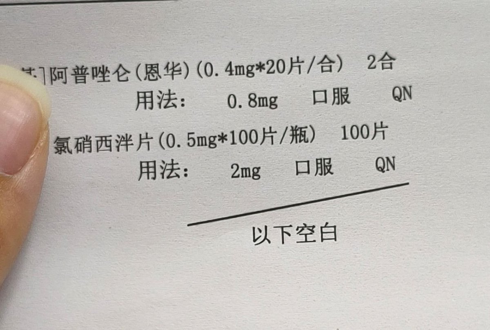

jerry
@YLS69979546
@qijieya 我这附近的二甲医院开阿普没其他三甲开的多，还没思诺思，普瑞倒是挺好开的

锦木祈杰
@qijieya
二甲医院的医生就是有实力
我在南京脑科医院，一整个病区只有 5 颗 0.5mg 的氯硝西泮，病人睡不着 只能吃 0.4mg*2 的阿普唑仑
我在本地二甲小医院 一开就是 100 片
而且给的处方是每晚 2mg 氯硝&0.5mg 阿普唑仑，两种苯二氮卓一起吃，医生问我吃多少 我就说吃两毫克氯硝，现在想想还是太带劲了 https://t.co/PE1OXkSt9O